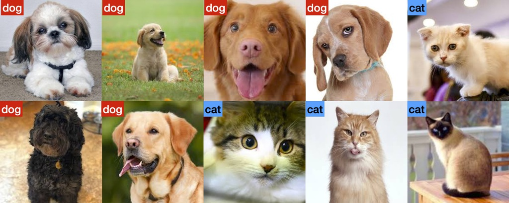
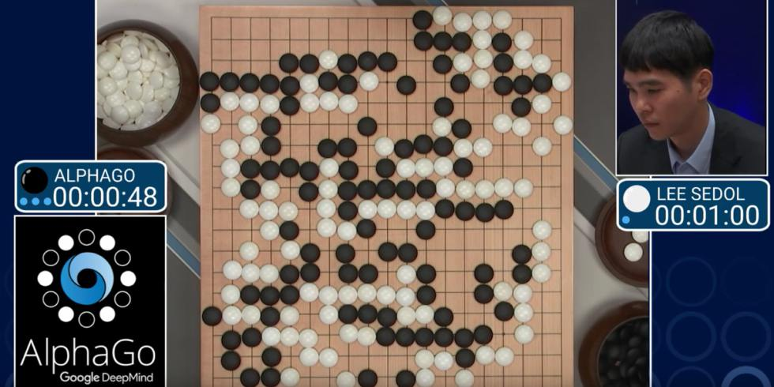
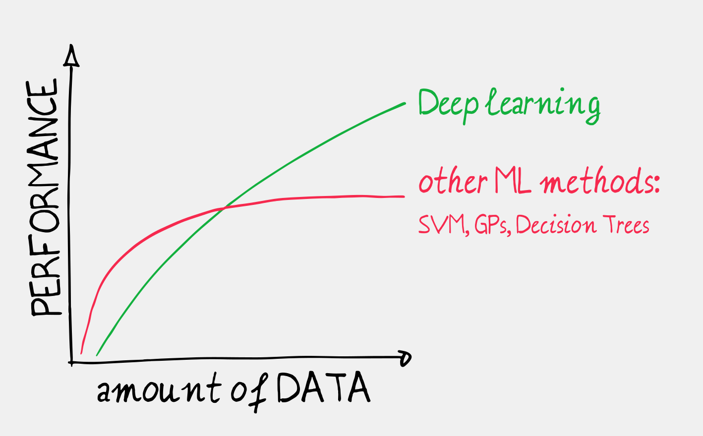

Introduction
Deep Learning and Machine Learning
Deep Learning is a particular type of machine learning method, and is thus part of the broader field of artificial intelligence (using computers to reason). Deep learning is another name for artificial neural networks, which are inspired by the structure of the neurons in the cerebral cortex.
The recent quantum leap in machine learning has solely been driven by deep learning successes. When you read or hear about AI or machine Learning successes in recent years, it really means Deep Learning successes.
Machine Learning can be split into 3 main fields:
Figure 0.1: AI, ML and Deep Learning.
Supervised Learning:
Supervised Learning is by far the most common application in ML (say 95% of the research papers). We assume that we have collected some data (eg. user ). Namely, we collected \(p\) features from each of the \(n\) observations of our dataset (eg. pictures, or user actions on a website). For each of these observation feature vectors \({\bf x}_i\), we also know the outcome \(y_i\) (eg. \(y_i=0,1\) depending on whether the picture shows a dog or a cat). From this labelled dataset \(({\bf x}_i, y_i)\), we want to estimate the parameters \({\bf w}\) of a predictive model \(f({\bf x}_i, {\bf w})=y_i\).
Figure 0.2: AI, ML and Deep Learning.
The task is thus to find a model to predict the outcome from input features.
Unsupervised Learning:
The task is here to learn about a dataset \(({\bf x}_i)\) by just looking at it, without any labelled information \(y_i\). For instance, a typical application of unsupervised learning is to cluster a dataset into smaller groups of observations that seem to share similar feature vectors. Hopefully the clusters mean something useful that can be exploited afterwards.
Reinforcement Learning:
The task is about teaching an agent how to interact with its environment (the data), so as to get maximum reward. Reinforcement Learning is used in applications such as game playing, robotics, etc.
Deep Learning has made major breakthroughs in all three fields. So much so that virtually all research papers in these field rely on neural networks.
Deep Learning Successes
Below are a number of machine learning applications, which have been
Image Classification
Image Recognition is one of the core applications of Computer Vision, and is arguably the birthplace of modern Deep Learning. Image recognition used to be a particularly challenging task of computer vision. See for instance the 2014 comic by xkcd:

The generally adopted approach was to compute a collection of image features that people found to be useful and then apply the most popular classification method at that the time.
ImageNet [www.image-net.org] runs an annual challenge where software programs compete to correctly classify and detect objects and scenes in images. Up to 2012, support vector machine (SVM) was the method of choice for classification.
Figure 0.3: Image Net.
In 2012, it was shown (Krizhevsky, Sutskever, and Hinton 2012) that deep learning models could massively drop the object recognition error rate. This paper has caught the attention of the image recognition community and beyond. The paper is surprisingly not technically revolutionary. Neural Networks had been indeed around for a few decades, without attracting too much momentum. This time however, the significance of improvement could not be left unnoticed. Since then, all methods are based on neural networks, making year on year incremental progress. So much so that machines can now do better than humans in this specific task. In 2014, Andrej Karparthy manually entered the competition and obtained a 5% error rate). For reference, the 2017 winning entry achieved a 2.3% error rate.
Figure 0.4: Error Rates at Image Net.
Scene Understanding
These new achievements in image recognition have then been brought to nearby fields such Scene Understanding. The figure below show the semantic segmentation results from Mask R-CNN (He et al. 2017). Each pixel can be automatically be associated with a particular class (eg. human, train, car, etc.).
Figure 0.5: Results from Mask R-CNN. (He et al. 2017)
Image Captioning
By combining image models with language models, we are now able to automatically generate captions from images (see Figure below).
![Results of automaated image captioning [@imagecaptioning]. See [Google Reserach blog entry](https://goo.gl/U88bDQ)](figures/captioning.png)
Figure 0.6: Results of automaated image captioning (Vinyals et al. 2015). See Google Reserach blog entry
Machine Translation
By 2014, the deep learning revolution had spread beyond computer vision and made its introduction in natural language processing.
All major tech companies have rapidly changed their machine translation systems to use Deep Learning. For instance, Google used to average a yearly 0.4% improvement on their machine translation system. Their first attempt at using Deep Learning yielded an overnight 7% improvement, more than in an entire lifetime! (see here).
Several years of handcrafted development could not match a single initial deep learning implementation.
New York Times, “The Great AI Awakening” https://goo.gl/DPYp6d
In 2014, Skype Translator was announced. It trains and optimises speech recognition, automatic machine translation and speech synthesis tasks, acting as the glue that holds these elements together.
Game Playing
Deep learning has also been introduced in reinforcement learning to solve complex sequential decision making problems.
Recent successes include: playing old Atari computer games, programming real world Robots and beating humans at Go. One notable event has the victory of AlphaGo by DeepMind over the humans.

Reasons of a Success
Neural Networks have been around for decades. But is only now that it surpasses all other machine learning techniques. Deep Learning is now a disruptive technology that has been unexpectedly taking over operations of technology companies around the world. By the way, the word disruptive is not an overstatement.
``The revolution in deep nets has been very profound, it definitely surprised me, even though I was sitting right there.’’.
— Sergey Brin, Google co-founder
Why now?
Because Deep Learning does scale.

Neural Nets are the only ML technique whose performance scales efficiently with the training data size. Other ML popular techniques just can’t scale that well.
The advent of big databases, combined with cheaper computing power (Graphic Cards), meant that Deep Learning could take advantage of all this, whilst other techniques stagnated. Instead of using thousands of observations, Deep Learning can take advantage of billions.
The tipping point was 2012 in Computer Vision and around 2014 in Machine Translation.
Deep Learning offers a (relatively) simple framework to define and parametrise pretty much any kind of numerical method and then optimise it over massive databases.
By adopting an automated optimisation approach to tuning algorithms, Deep Learning is able to surpass hand-tailored algorithms of skilled researchers.
It offers a systematic approach, when before, algorithms took years of human efforts to design.
Democratisation
Another aspect of the revolutionary aspect of Deep Learning is it is a (relatively) simple framework. Good programmers can train state of the art neural nets, without having done 10+ years of research in the domain. It is an opportunity for start-ups and it has become a ubiquitous tool in tech companies.
Global Reach
It has been applied successfully to many fields of research, industry and society: self-driving cars, image recognition, detecting cancer, speech recognition, speech synthesis, machine translation, drug discovery and toxicology, customer relationship management, recommendation systems, bioinformatics, advertising, controlling lasers, etc.
Impact
Here is a question for you: how long before your future job gets replaced by an algorithm? Probably much sooner than you think. You might feel safe if you are an artist…
… but then again:
Figure 0.7: automatic style transfer
A Neural Algorithm of Artistic Style. L. Gatys, A. Ecker, M. Bethge. 2015. https://arxiv.org/abs/1508.06576
Does an AI need to make love to Rembrandt’s girlfriend to make art? https://goo.gl/gi7rWE
Intelligent Machines: AI art is taking on the experts. https://goo.gl/2kfyXd